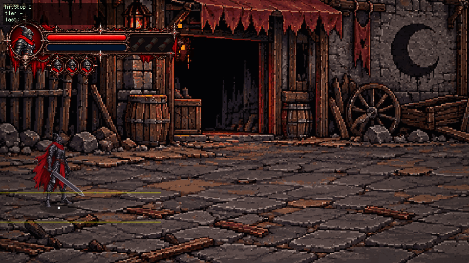
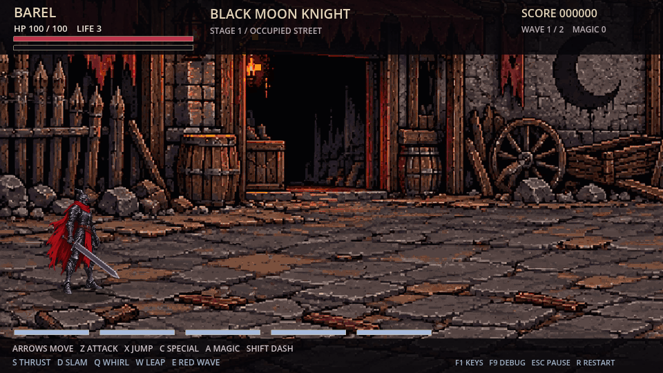
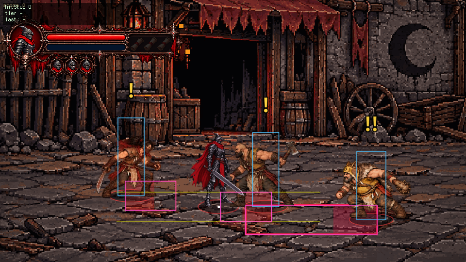
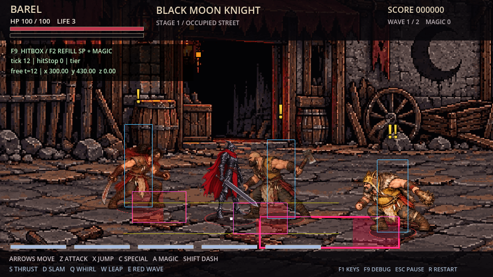
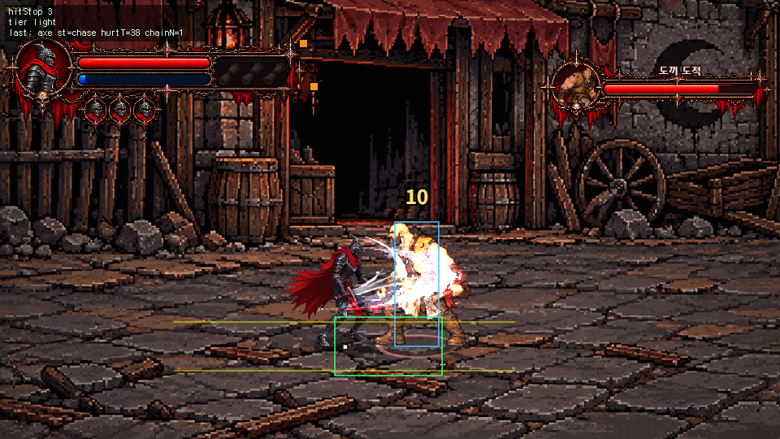
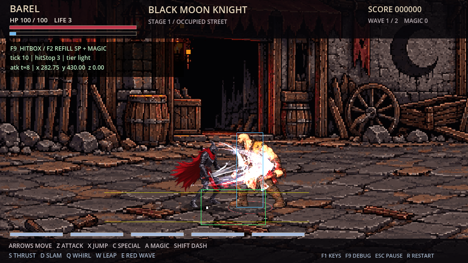
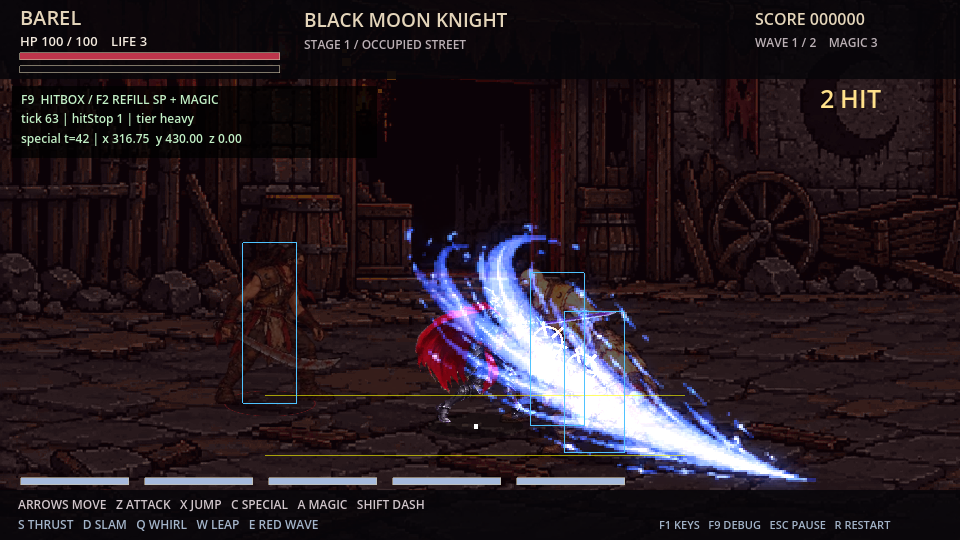

Original source Canvas and Godot 4.7.2 at 960×540. Character frames, foot positions, original street layers and attack ranges are comparable. HUD, text rendering, particles and vignette have the documented Phase 2 differences.






